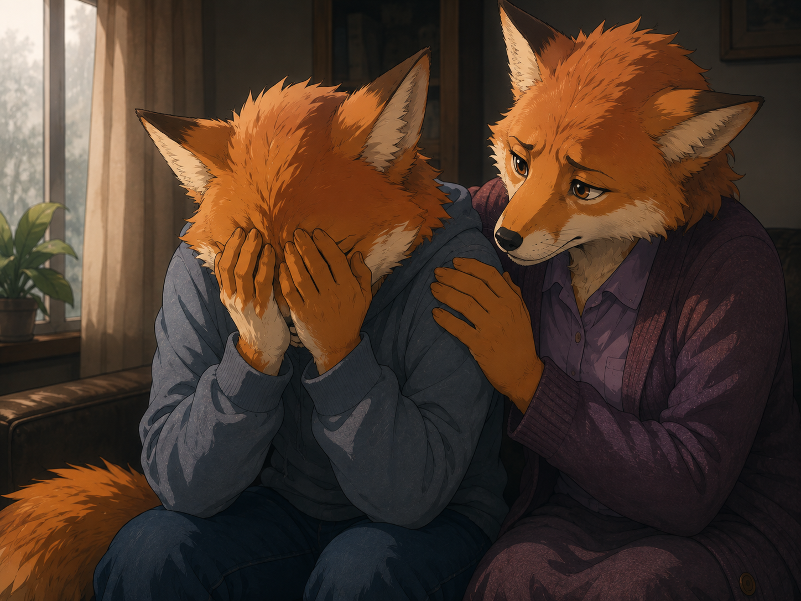

犯罪は、いつになってもなくなりません。
しかも犯罪の被害に遭った場合、失ったお金や財産がすべて戻ってくることは稀です。 犯人が逮捕されたとしても、実際の被害額の一部しか戻らないこともあります。
さらに、被害者やその家族からすると、 「これほど苦しめられたのに、刑罰はこれだけなのか」 と感じることがあります。
犯人には裁判や更生の仕組みがあります。 しかし被害者には、失ったものと心の傷が長く残ることがあります。
では、犯罪によって深く傷ついた時、どうすればよいのでしょうか。

犯罪被害は「事件が終われば終わり」ではない
犯罪そのものは数分、数時間で終わるかもしれません。
しかし、心の中では事件がその後も続くことがあります。
犯罪被害を経験した人には、
- また襲われるのではないかという恐怖
- 外出することへの不安
- 人を信用できなくなる気持ち
- 怒りや復讐したいという感情
- 「なぜ気付かなかったのか」という自責の念
- 不眠や悪夢
- ちょっとした音にも驚くほどの緊張
- 事件を何度も思い出してしまうこと
などが起きることがあります。
これは単に「気が弱くなった」ということではありません。
大きな危険を経験すると、脳は「もう二度と同じ危険に遭ってはいけない」と警戒を強めます。 そのため、本来なら危険ではない状況でも体が緊張したり、過敏に反応したりすることがあります。
被害に遭う前と同じように生活できない自分を責める必要はありません。
心にも傷ができれば、回復には時間が必要です。
「早く忘れよう」としなくてもよい
周囲の人から、 「もう終わったことだから忘れた方がいい」 「いつまでも考えない方がいい」 「前向きになろう」 と言われることがあります。
もちろん善意から出た言葉でしょう。
しかし、深い心の傷は意思の力だけで消せるものではありません。
むしろ、 「怖かった」 「悔しい」 「腹が立つ」 「悲しい」 という自分の感情を認めることが回復の第一歩になる場合があります。
「泣くのに時があり，……泣き叫ぶのに時が……ある」。 ― 伝道の書 3:4
悲しい時に悲しむことは間違いではありません。
まず「安全」を取り戻す
犯罪被害の後には、心理的な安心感が大きく損なわれます。
そのため、最初に必要なのは「強くなること」ではなく、 再び安全を感じられる環境を作ることです。
例えば、戸締まりを見直す、必要なら電話番号や連絡方法を変更する、 警察や行政の相談窓口を利用する、といった現実的な対策があります。
こうした小さな対策でも、 「今はもう、あの時とは違う」 と脳に知らせる助けになります。
一人で抱え込まない
「心配事があると心が沈み，良い言葉によって心が晴れる」。 ― 格言 12:25
犯罪被害という大きな重荷を一人だけで背負う必要はありません。
信頼できる家族や友人に、 「怖かった」 「まだ思い出してしまう」 「腹が立って仕方がない」 と話すだけでも、混乱していた気持ちが少し整理されることがあります。
大切なのは、無理に全部話さなくてもよいということです。 話したくないことまで詳しく説明する必要はありません。
必要であれば、トラウマについて知識のある心理士、精神科・心療内科、 行政や犯罪被害者支援の相談機関などに助けを求めることもできます。
自分を責めない
犯罪被害者が苦しみやすい問題の一つが、 「あの時こうしていれば……」 という考えです。
「なぜ怪しいと気付かなかったのだろう」 「なぜ逃げなかったのだろう」 「家族を守れなかった」 と、何度も自分を責めてしまうことがあります。
しかし、後からならいくらでも別の選択肢を考えることができます。 事件の最中は恐怖や混乱の中にいたのです。
もし大切な友人が同じ被害に遭ったなら、どんな言葉を掛けるでしょうか。
おそらく責めるのではなく、 「大変だったね」 「よく耐えたね」 と言うのではないでしょうか。
そのような思いやりを、自分自身にも向けることができます。
怒りを感じてもおかしくない
犯人への怒り。 刑罰に対する不満。 失ったものが戻らないことへの悔しさ。
こうした感情も自然なものです。
「怒ってはいけない」と無理に押さえ込む必要はありません。
一方で、一日中事件について考え続け、怒りや復讐心に心を占領されると、 今度は被害者自身の心と体が疲れ切ってしまいます。
日常生活を少しずつ取り戻す
犯罪被害の後は、生活そのものが崩れてしまうことがあります。
そんな時には、大きな目標よりも小さな日常を取り戻すことが役立ちます。
- きちんと食事をする
- 眠れる環境を整える
- 少し散歩する
- 自然を見る
- 好きな音楽を聴く
- 絵を描く
- 文章を書く
- 信頼できる人と過ごす
こうした普通の行動は小さく見えます。
しかし、それを繰り返すことで、 「犯罪に遭った人生」だけではなく、 「今も続いている自分の人生」 を少しずつ取り戻していくことができます。
聖書にも、自分の体を「養って大切にする」ことが述べられています。 （エフェソス 5:29）
小さな良いものにも目を向ける
被害に遭った直後に「感謝しましょう」と言われても、 受け入れられないことがあるでしょう。
感謝するというのは、犯罪を忘れることではありません。 苦しみを小さく考えることでもありません。
ただ、 今日食べたものがおいしかった。 安心して眠れる場所がある。 話を聞いてくれる人がいる。 空がきれいだった。 という小さな良いことにも目を向けるということです。
「感謝を表しましょう」。 ― コロサイ 3:15
苦しい出来事だけが自分の世界のすべてではない、と少しずつ思えるようになることは、 心を守る助けになります。
聖書が与える「将来への希望」
犯罪被害者が抱える苦しみの一つは、 「この世の中は結局こんなものなのか」 という絶望感でしょう。
人間の司法制度には限界があります。
犯人が捕まらないこともあります。 失った財産が戻らないこともあります。 判決が出ても、被害者の心の傷まで元通りになるわけではありません。
だからこそ聖書は、今の社会が少し改善されるというだけではなく、 もっと大きな希望を示しています。
聖書は、神が将来、暴力や不正、苦しみの原因そのものをなくすと約束していることを教えています。
「希望は，私たちの命のためのいかり」。 ― ヘブライ 6:19
船のいかりが嵐の中で船を安定させるように、 将来に対する確かな希望は、 今すぐすべての問題を解決できなくても、 心が流されてしまわないよう支えてくれます。
被害者を支える人にできること
家族や友人が犯罪被害に遭った場合、 「何と言えばいいのだろう」 と困ることがあります。
しかし、特別な言葉を言う必要はありません。
「賢い人たちの舌は人を癒やす」。 ― 格言 12:18
「真の友はどんな時にも愛を示す」。 ― 格言 17:17
助けになるのは、相手の話をじっくり聞くことです。
「どうしてそんなことをしたの？」 「こうすれば防げたのに」 と責めるような言葉は避けます。
そして、 「何かできることがあれば言ってね」 と伝え、必要な時にそばにいることができます。
心の傷が癒える速度は人によって違います。
昨日は元気だったのに、今日は突然落ち込むこともあります。 回復は一直線ではありません。
だからこそ、辛抱強く寄り添うことが大切です。
犯罪に人生を奪わせない
犯罪によって失ったものを完全に取り戻せないことがあります。 事件そのものを消すこともできません。
それでも、犯罪者にその後の人生まですべて奪わせる必要はありません。
恐怖や怒りを感じる自分を責めず、一人で抱え込まず、 体と心を大切にしながら、少しずつ安全な日常を取り戻すことができます。
そして聖書は、今の苦しみだけを見るのではなく、 犯罪や恐怖そのものがなくなる将来に目を向けるよう励ましています。
心の傷が癒えるには時間がかかるかもしれません。
それでも、 今日一日を穏やかに過ごせた。 少し眠れるようになった。 誰かに話せた。 笑える瞬間が戻ってきた。
そうした一つ一つも、大切な回復です。
犯罪被害から立ち直るとは、出来事を忘れることではありません。
安心、安全、自尊心、人への信頼、そして未来への希望を少しずつ取り戻していくことなのです。